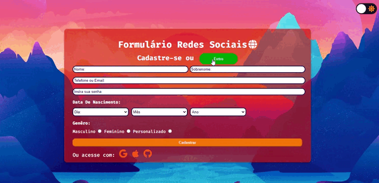
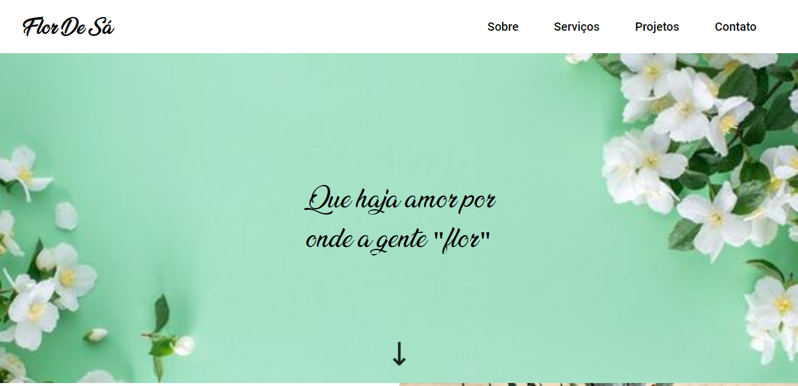
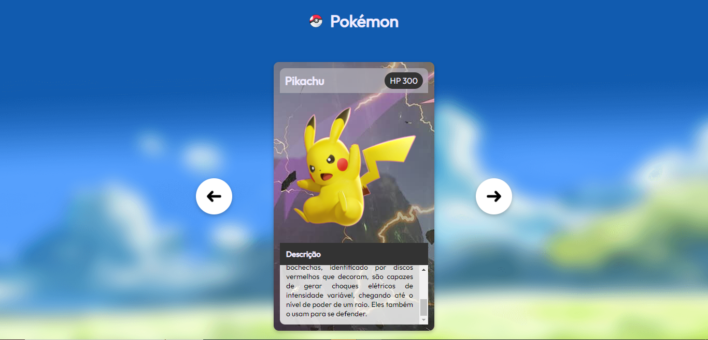

<PROJETOS/>

Página de uma loja de HQ'S fictícia com tradução, feita para realizar uma tarefa de inglês.
Tecnologias usadas:

Formulário de redes sociais com Dark Mode.
Tecnologias usadas:

Landing Page feita para uma floricultura, sugerida pelo curso DevQuest.
Tecnologias usadas:

Slider com cards da série de anime Pókemon feito na semana MapaDevWeek.
Tecnologias usadas: